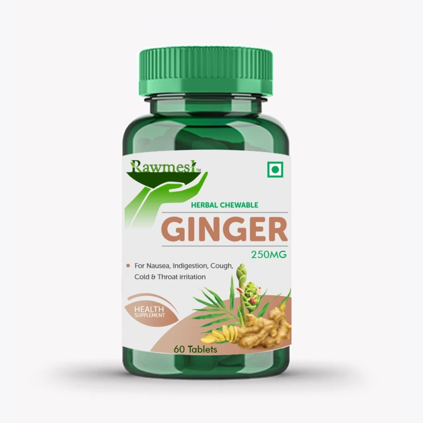
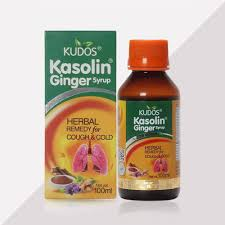

Balances kapha and pitta.
Read more about various ailments, it's causes, symptoms, ayurvedic treatments, etc.
Ginger benifits & Medicinal Uses
Ginger is known to have anti-bacterial and anti-inflammatory
properties which lead to a soothing relief from sore throat and cough.
Honey mixed with ginger is quite popular as a home remedy.
1. Nausea relief
Encouraging stomach emptying can relieve the discomforts of nausea due to:
2. Chemotherapy
Experts who work with patients receiving chemo for cancer,
say ginger may take the edge off post-treatment nausea,
and without some of the side effects of anti-nausea medications.
3. Pregnancy
For generations, women have praised the power of ginger to ease “morning sickness”
and other queasiness associated with pregnancy.
Even the American Academy of Obstetrics and Gynecology
mentions ginger as an acceptable nonpharmaceutical remedy for nausea and vomiting.
4. Bloating and gas
Eating ginger can cut down on fermentation, constipation and other causes of bloating and intestinal gas
Wear and tear on cells.
Ginger contains antioxidants.
These molecules help manage free radicals, which
are compounds that can damage cells when their numbers grow too high.
Is ginger anti-inflammatory
It is possible.
Ginger contains over 400 natural compounds,
and some of these are anti-inflammatory.
More studies will help us determine if eating ginger has
any impact on conditions such as rheumatoid arthritis or respiratory inflammation.
Tablets


